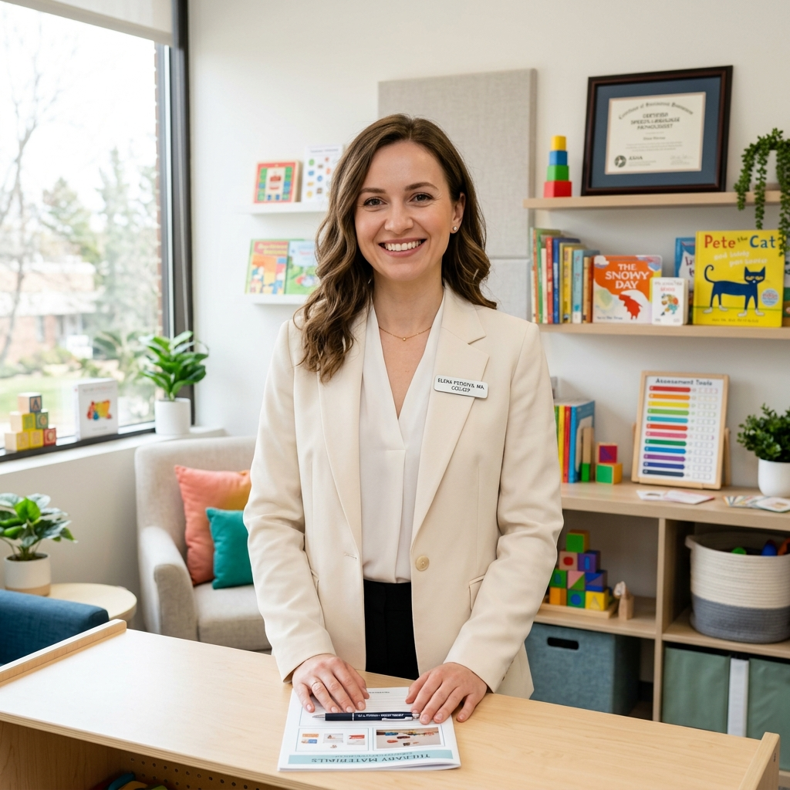

Consultório especializado em transformar vidas através da fala, audição e linguagem. Atendimento acolhedor para todas as idades.

Sou Fonoaudióloga formada pela Universidade Federal com especialização em Desenvolvimento Infantil e Reabilitação Vocal. Minha missão é ajudar meus pacientes a se comunicarem de forma confiante e com mais qualidade de vida.
Com anos de experiência clínica, busco um olhar atento a cada indivíduo, baseando os tratamentos nas mais recentes evidências científicas alinhadas ao conforto do paciente.
Descubra como posso ajudar você ou sua família a superar pequenos e grandes desafios comunicativos.
Estímulo do desenvolvimento da fala em crianças, diagnóstico e tratamento de atrasos e trocas na fala e na escrita.
Prevenção e reabilitação de distúrbios da voz. Ideal para profissionais como professores, cantores e locutores.
Terapia focada nos músculos da face e nas funções de respiração, mastigação e deglutição, visando melhora funcional.
Treinamentos específicos para melhorar a habilidade de interpretar sons, auxiliando bastante no rendimento escolar.
Dê o primeiro passo rumo a uma comunicação melhor hoje mesmo. Mande uma mensagem pelo WhatsApp ou preencha o formulário abaixo para tirarmos qualquer dúvida.
(11) 98765-4321
ola@draalinesilva.com.br
Av. Paulista, 1000, Sala 45 - São Paulo, SP